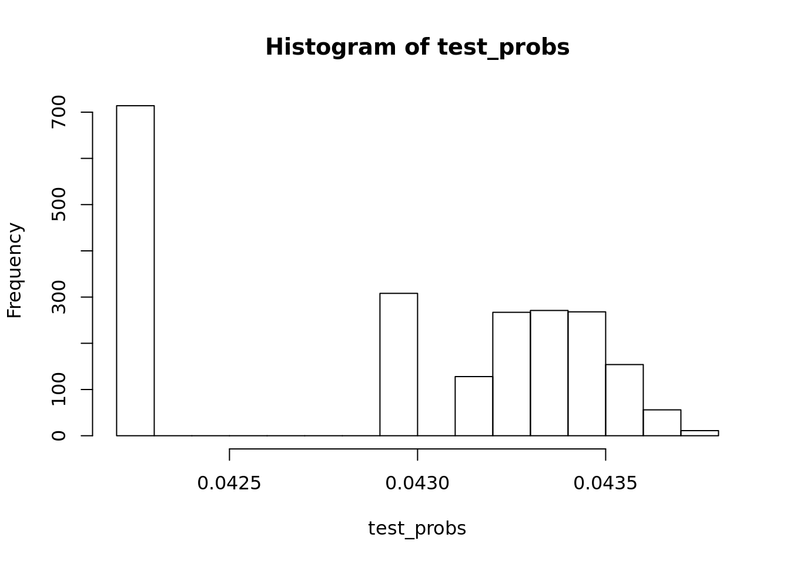

Chapter 4 Classification
4.1 Music dataset
From the CORGIS data project I’ve obtained a music dataset.
music <- read.csv("Datasets/music_hottest_song_only.csv")
y <- as.numeric(music$artist.terms == "hip hop")
x <- music$song.hotttnesss4.2 Logistic Regression Review
\(Y \sim Binomial(n=1, p(X))\)
\(p(X) = \frac{exp(X\beta)}{\exp(X\beta) + 1}\)
logit <- function(x){exp(x) / (1 + exp(x))}
logistic_obj <- function(params, X, y){
xbeta <- cbind(1, X) %*% params
p <- logit(xbeta)
return(-sum(dbinom(y, size=1, prob=p, log=TRUE)))
}
optim(c(1, 1), logistic_obj, X=x, y=y)## $par
## [1] -3.2070659 0.2257483
##
## $value
## [1] 721.6383
##
## $counts
## function gradient
## 63 NA
##
## $convergence
## [1] 0
##
## $message
## NULL#Wayne created in class
my_model <- glm(y ~ x,
family = binomial(logit))
summary(my_model)##
## Call:
## glm(formula = y ~ x, family = binomial(logit))
##
## Deviance Residuals:
## Min 1Q Median 3Q Max
## -0.3151 -0.2971 -0.2883 -0.2520 2.6326
##
## Coefficients:
## Estimate Std. Error z value Pr(>|z|)
## (Intercept) -3.20585 0.07808 -41.059 <2e-16 ***
## x 0.22775 0.12107 1.881 0.0599 .
## ---
## Signif. codes: 0 '***' 0.001 '**' 0.01 '*' 0.05 '.' 0.1 ' ' 1
##
## (Dispersion parameter for binomial family taken to be 1)
##
## Null deviance: 1446.9 on 4411 degrees of freedom
## Residual deviance: 1443.3 on 4410 degrees of freedom
## AIC: 1447.3
##
## Number of Fisher Scoring iterations: 6How to run logistic regression in R?
train <- sample(c(TRUE, FALSE), nrow(music), replace = TRUE)
mod <- glm(y ~ x, family = binomial(link = "logit"),
subset = train)
#To use the model, we pass it to the predict function. We pass in the new data
#We pass in the compliment of the subset we used (train = !test)
#We also pass in response.
#What is the probability that you think they are a 1 vs a 0
test_probs <-
predict(mod, newdata = data.frame(x = x[!train]), type = "response")
class(test_probs)## [1] "numeric"#This should feel absolutely like it is 0 and not one
hist(test_probs)
#Round the numbers
test_pred <- test_probs > 0.5
#Head the numbers
head(test_pred)## 1 2 3 4 5 6
## FALSE FALSE FALSE FALSE FALSE FALSE#How good is my prediction
#First, how many predications did we get correct
same_as_data <- as.numeric(test_pred) == y[!train]
mean(same_as_data)## [1] 0.9655489#About 96 percent. Seems really good.Then we ask is the data unbalanced if you do you this for cancer in the general population for example. Could be bad if you have 96 percent accuracy
We call this a classification error. The histogram should be a red flag. We are saying everything is 0, and then are just wrong when its 1. Iin this case, every song is not hip hop, and we are right 96% of the time.
| Y = 1 | Y = 0 | |
|---|---|---|
| \(\hat{Y}\) = 1 | A | B |
| \(\hat{Y}\) = 0 | C | D |
\(\frac{A}{A + C}\) our recall! Of all the records that are “1”, how many are our model capturing
\(\frac{B}{B + D}\) our precision! Of all the records that are “1”, how many are our model capturing
The amazing thing is that we can actually make one of these one!
alpha <- 0.5
test_pred <- test_probs > alpha
truly1 <- y[!train] ==1
called1 <- as.numeric(test_pred)
recall <- sum(called1 & truly1)/ sum(truly1)
precision <- sum(truly1 & called1)/ sum(called1)
recall## [1] 0precision## [1] NaNRight now the recall is really bad: but lets make everything one and make our recall really good!
alpha <- 0
test_pred <- test_probs > alpha
truly1 <- y[!train] ==1
called1 <- as.numeric(test_pred)
recall <- sum(called1 & truly1)/ sum(truly1)
precision <- sum(truly1 & called1)/ sum(called1)
recall## [1] 1precision## [1] 0.03445108Now lets make a sequence!
alphas <- seq(0,1, length.out = 10000)
recalls <- rep(NA, length(alphas))
precisions <- rep(NA, length(alphas))
for(i in seq_along(alphas)){
alpha <- alphas[i]
test_pred <- test_probs > alpha
truly1 <- y[!train] ==1
called1 <- as.numeric(test_pred)
recall <- sum(called1 & truly1)/ sum(truly1)
precision <- sum(truly1 & called1)/ sum(called1)
recall[i] <- recall
precision[i] <- precision
}
#plot(recalls, precisions)What are the most popular “artist.terms” in the dataset?
artists_sorted <- sort(table(music$artist.terms), decreasing =T)
artists_sorted[1]## hip hop
## 171- Choose one “artist.terms” to predict for, then try running logistic regression vs usual lm() on all of the other variables, do they pick up different variables? What would your next steps be?
logit <- function(x){exp(x) / (1 + exp(x))}
logistic_obj <- function(params, X, y){
xbeta <- cbind(1, X) %*% params
p <- logit(xbeta)
return(-sum(dbinom(y, size=1, prob=p, log=TRUE)))
}
optim(c(1, 1), logistic_obj, X=x, y=y)## $par
## [1] -3.2070659 0.2257483
##
## $value
## [1] 721.6383
##
## $counts
## function gradient
## 63 NA
##
## $convergence
## [1] 0
##
## $message
## NULLImagine you’re doing fake news prediction, what metric(s) would you care more about the most? How would you recommend a target for these metrics for a company like Facebook?
artist_cols <-
grepl("^artist", names(music))
my_mod <-
glm(y ~ ., data = music[,!artist_cols])
ols <-
lm(y ~ ., music[,!artist_cols])We can plot this data and see the relationship!
plot(summary(ols)$coefficients[, 4], summary(my_mod)$coefficients[, 4])If we plot the coefficients, of logistic versus regression, against each other, you will get a very very strong relationship. Things that are significant in one will be significant in the other.
If you only care about what features are important, there is very little difference between logistic and regression. Ultimately, when we are looking at the optimization, there is an xbeta term we created. It is just like in regression. Then you penalize by some magical calculation but eitherway it is all dependent on the xbeta term. In a sense, they are the same category of models.